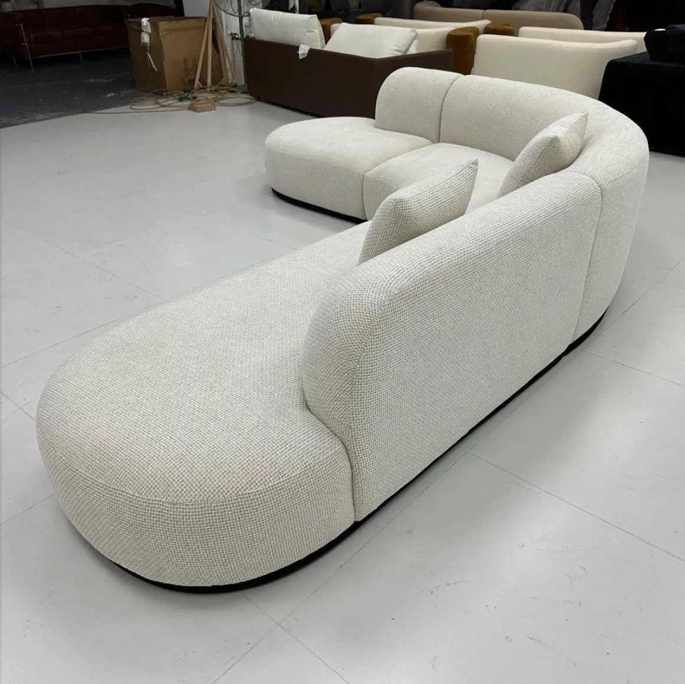

Crafted in Erattupetta, Kerala
Heirloom teak furniture, made for the way you live.
Direct from our workshop with a comprehensive 5-year warranty, free delivery, and professional installation.
🚚Free Delivery & Installation
🛡️5-Year Warranty
🌳Sustainable Materials
💳Easy EMI Options
Best Sellers
Shop the Collection
See it in your home first
Send us a photo of your room on WhatsApp and our master designers will recommend the perfect dimensions and timber tone for your space, completely free of charge.
Share your room on WhatsAppLoved by Kerala homes
+ Share Your ReviewAbout Homeify
We are a family-owned woodworking atelier located at M E S Junction, Erattupetta. We build genuine solid teak and rosewood furniture by hand, blending traditional joinery with clean modern aesthetics. By selling direct from our workshop to your home, there are zero middleman markups—just heirloom quality at fair factory pricing.